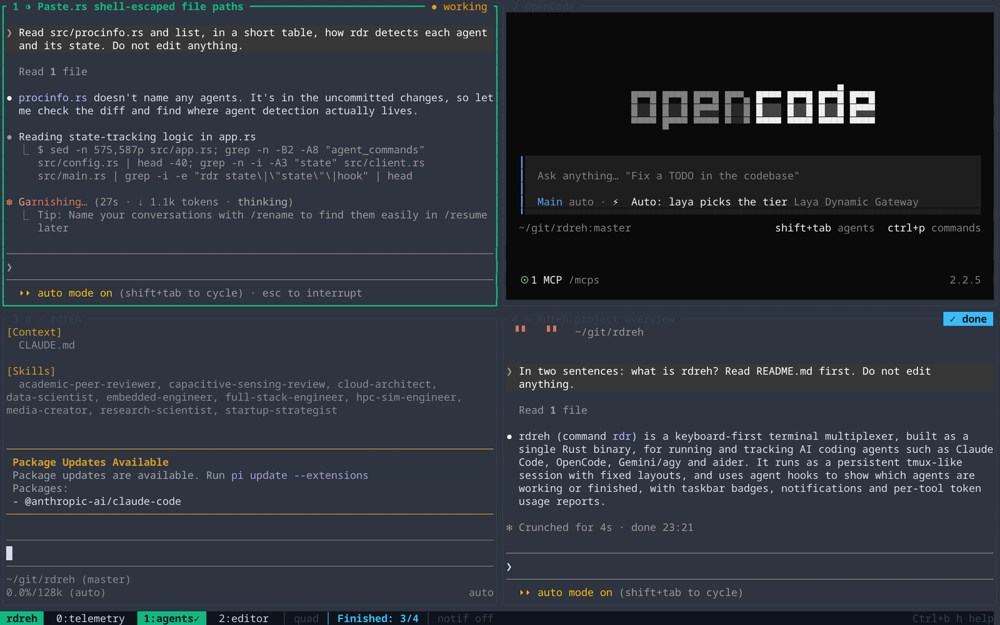
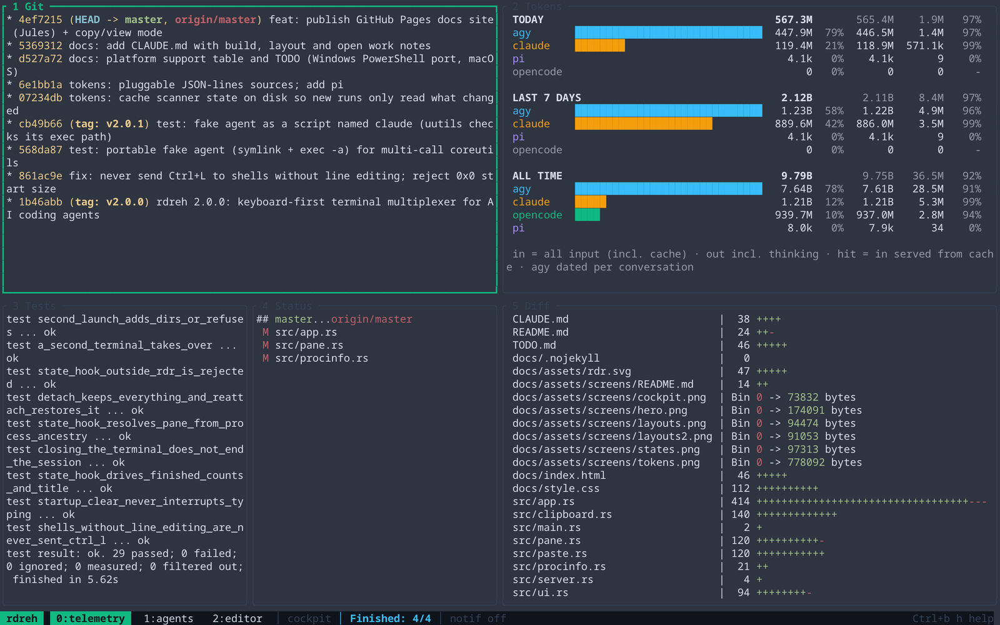
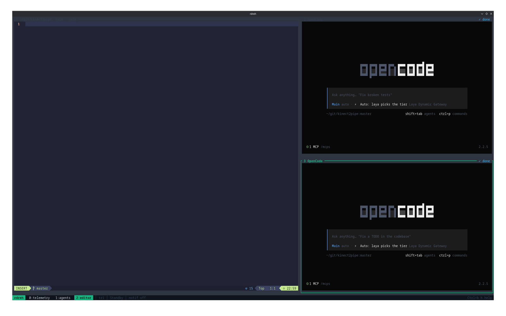
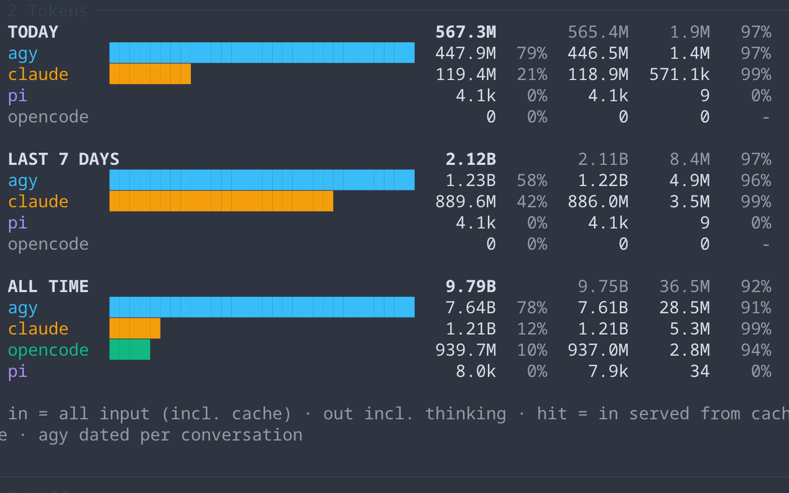
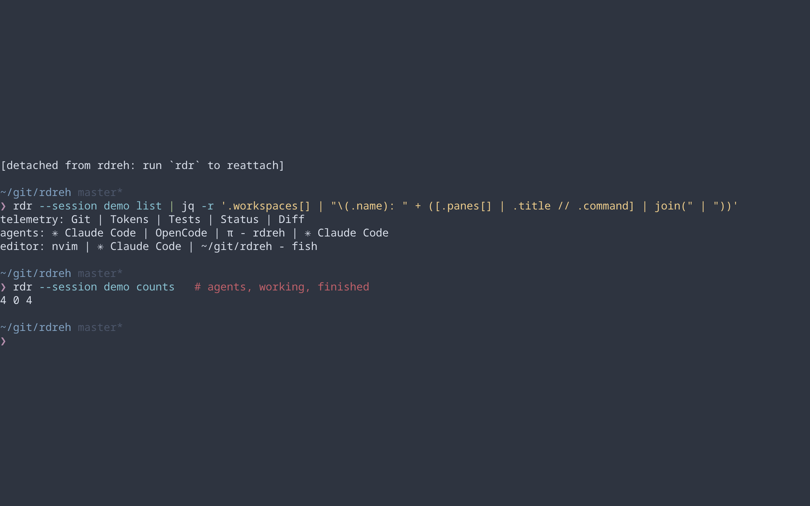
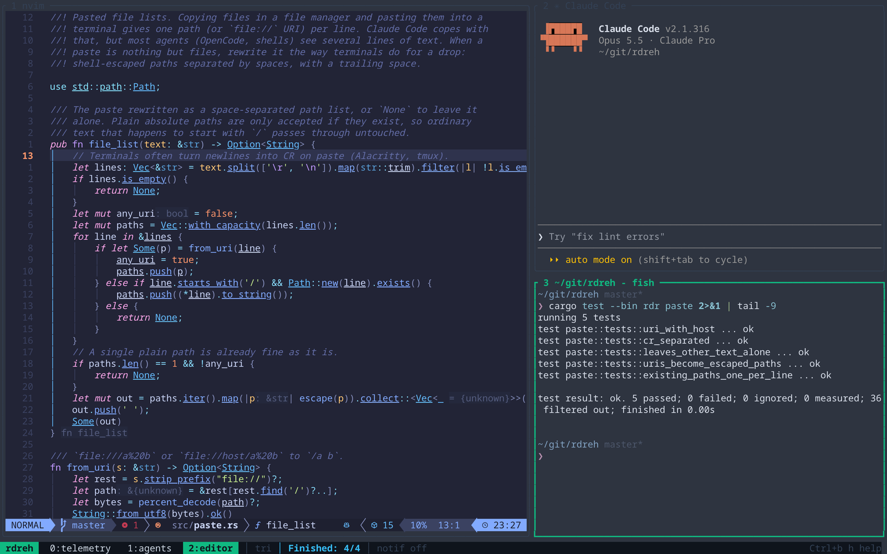
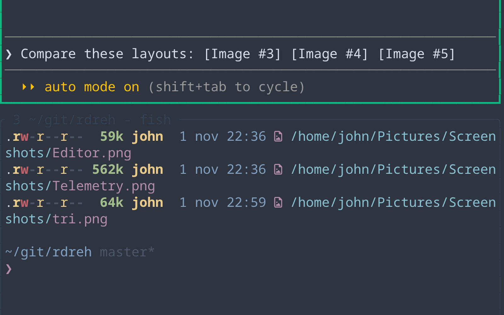
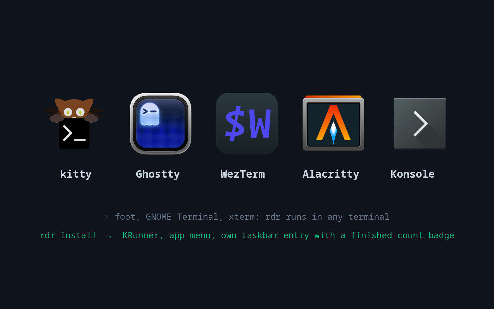

A radar for your AI agents
A keyboard-first terminal multiplexer written in Rust. Track agent states, analyze token telemetry, and organize workflows with persistent sessions and fixed layouts.
cargo install --git https://github.com/JohnGF/rdreh && rdr installLinux (any distro; extra desktop integration on KDE). macOS and Windows are planned.

Cockpit Layout
Optimized 5-pane cockpit layout. Fixed layouts: single, dual, tri (60/40), quad, rows.

Agent States & Notifications
Agent panes hook rdr state working|idle. Status bar shows active/finished counts; KDE badges notify on completion.
docs/assets/screens/states.png

Token Telemetry
Live token dashboard with rdr tokens. Daily, weekly, all-time stats per tool.

Persistent Sessions
Detach with Ctrl+b d; close the window. Everything keeps running and resumes on next rdr.
docs/assets/screens/sessions.png

Workspaces & Layouts
Switch projects with Alt+0..9. Dynamic geometry on resize. Alt+z zooms focused pane.
docs/assets/screens/layouts.png

Paste Files from Your File Manager
Copy files in Dolphin or Nautilus and paste them into any pane with Ctrl+b p (or your terminal’s Ctrl+Shift+V, where it supports file lists). rdreh turns the list of file:// URIs into escaped paths on one line, so agents like OpenCode get file paths they can use.
docs/assets/screens/paste.png

Any Terminal & KDE Integration
Works in kitty, Ghostty, WezTerm, Alacritty, Konsole and any other terminal. rdr install adds desktop shortcuts and KDE identity.

Keybindings
rdreh (rdr): keyboard-first agent multiplexer
No prefix Alt+0..9 jump workspace Shift+Arrows move panes Alt+` cycle panes Alt+l cycle layout Alt+z zoom Alt+=/Alt+r reset Alt+t tracking Alt+f finish Alt+n notifications Shift+PgUp/PgDn scrollback Shift+Enter newline
Ctrl+b then: h ? help a add project c workspace n % | " - pane x close pane & close workspace , rename z zoom Space cycle layout = reset 0..9 workspace d detach p paste (files become paths) q quit
Hooks: rdr state working|idlerdreh vs agent-swarm (tmux edition)
| Feature | rdreh | agent-swarm |
|---|---|---|
| Architecture | Single Rust binary | tmux + bash scripts |
| Layouts | Custom fixed (cockpit, tri, quad) | Standard tmux |
| Pasting files | File manager copies become escaped paths | Pasted as raw file:// lines |
| Telemetry | Live (rdr tokens) | Not included |
| State Tracking | Full (working, idle, finished) | Basic |
| Install | cargo install --git …/rdreh | Requires tmux, bash |